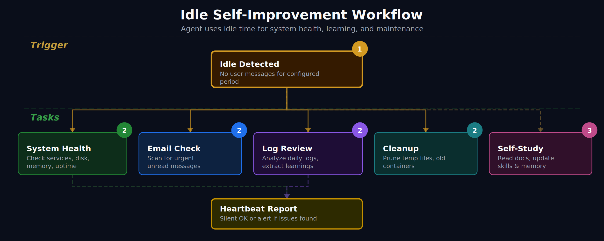

ปัญหาที่เรามักมองข้าม
AI Agent ส่วนใหญ่ทำงานแบบ "ถาม-ตอบ" — ถ้าคุณไม่ส่งข้อความ มันก็นั่งเฉยๆ ไม่ทำอะไรเลย เหมือนพนักงานที่รอคำสั่งอย่างเดียว ไม่เคยหันไปจัดโต๊ะหรือเช็คงานค้างเอง
แต่ถ้าเราบอก Agent ได้ว่า "เมื่อไม่มีใครคุยด้วย ให้ตรวจสอบระบบแทน" — เวลาว่างที่เคยสูญเปล่าก็กลายเป็นงานจริงที่ช่วยเราได้
🏠 เปรียบเทียบง่ายๆ
ลองนึกถึงผู้ช่วยที่ดี — เมื่อเจ้านายไปประชุม แทนที่จะนั่งเล่นโทรศัพท์ ผู้ช่วยคนนี้จะ: จัดเอกสาร, เช็คอีเมล, ดูว่าของในออฟฟิศขาดอะไรไหม นั่นคือสิ่งที่ Idle Self-Improvement ทำให้ AI Agent ของคุณ
Idle Improver คืออะไร?
Idle Improver เป็น Python script ที่ทำงานทุก 30 นาที ผ่าน cron job โดยมันจะ:
- เช็คก่อนว่าระบบว่างจริงไหม — ถ้ามีคนกำลังคุยกับ Agent อยู่ มันจะข้ามไปเลย ไม่รบกวน
- สแกนปัญหาหลายด้าน — disk เต็มไหม? memory สูงไปไหม? Docker container มีตัวไหนพังไหม?
- บันทึกผลลงไฟล์ — เก็บรายงานเป็น markdown ให้ Agent อ่านทีหลังได้

มันตรวจอะไรบ้าง?
Idle Improver ตรวจ 7 ด้านที่สำคัญที่สุดสำหรับเซิร์ฟเวอร์:
Docker Containers
ตรวจว่ามี container ที่ restarting วนลูป หรือ exit แบบผิดปกติไหม — ปัญหาที่มักเงียบจนกว่าลูกค้าจะบ่น
Disk Usage
แจ้งเตือนเมื่อ partition ใช้เกิน 85% — ก่อนที่ระบบจะเต็มจนหยุดทำงาน
Memory Usage
ตรวจ RAM ว่าใช้เกิน 80% ไหม — จับ memory leak ก่อนที่จะ crash
Stale Temp Files
หาไฟล์ใน tmp/ ที่เก่ากว่า 7 วัน — ทำความสะอาดขยะที่สะสม
Git Status
เช็ค uncommitted changes — ไม่ให้งานหายเพราะลืม commit
Python Syntax
ตรวจ syntax error ในสคริปต์ทั้งหมด — จับบั๊กก่อนที่จะรัน
Broken Symlinks
หา symbolic link ที่เสีย — ลดปัญหา "file not found" ลึกลับ
Vault Intelligence — ให้ Agent เข้าใจ Knowledge Base ของคุณ
นอกจาก Idle Improver แล้ว ยังมีเครื่องมืออีก 3 ตัวที่ช่วยให้ Agent ทำงานกับ Obsidian vault ของคุณได้อย่างชาญฉลาด:
Vault Stats — แดชบอร์ดสุขภาพ vault
เหมือนหน้า dashboard ของ vault คุณ — จำนวนไฟล์, คำ, ลิงก์, แท็ก, โน้ตที่ถูกทิ้ง, โน้ตกำพร้า ดูภาพรวมได้ในคำสั่งเดียว
python3 tools/vault_stats.pyAsk Vault — ค้นหาด้วยภาษาธรรมชาติ
ถาม vault เหมือนถามคน — "หาโน้ตเกี่ยวกับ machine learning" แทนที่จะจำชื่อไฟล์
python3 tools/ask_vault.py "machine learning"
python3 tools/ask_vault.py "RAG" --limit 5
python3 tools/ask_vault.py "note.md" --relatedVault Insight — วิเคราะห์ theme, gap, connection
วิเคราะห์ vault ในเชิงลึก — หาธีมที่ซ้ำ, โน้ตที่อ้างถึงแต่ไม่เคยสร้าง, โน้ตที่ควรเชื่อมกันแต่ยังไม่ได้ลิงก์ รันอัตโนมัติทุกสัปดาห์
python3 tools/vault_insight.py full --saveตั้งค่าใน 5 ขั้นตอน
การติดตั้งไม่ยากอย่างที่คิด — ใช้เวลาประมาณ 10-15 นาที:
ขั้นที่ 1: สร้างโฟลเดอร์
mkdir -p ~/.openclaw/workspace/tools
mkdir -p ~/.openclaw/workspace/memory
mkdir -p ~/.openclaw/workspace/logs
mkdir -p ~/.openclaw/workspace/tmpขั้นที่ 2: วางสคริปต์
ดาวน์โหลดหรือสร้างไฟล์ 4 ตัวใน tools/:
workspace/tools/
├── idle_improver.py # สแกนสุขภาพระบบ
├── vault_insight.py # วิเคราะห์ vault
├── vault_stats.py # แดชบอร์ด vault
└── ask_vault.py # ค้นหาใน vaultขั้นที่ 3: แก้ path ให้ตรง
ในแต่ละสคริปต์ แก้ 2 บรรทัดนี้ให้ตรงกับเครื่องคุณ:
WORKSPACE = Path("~/.openclaw/workspace").expanduser()
VAULT = Path("~/obsidian-vault").expanduser() # ← path ของ vault คุณขั้นที่ 4: ตั้ง cron job
# เปิด crontab
crontab -e
# เพิ่ม 2 บรรทัดนี้:
*/30 * * * * /usr/bin/python3 ~/.openclaw/workspace/tools/idle_improver.py
0 3 * * 1 /usr/bin/python3 ~/.openclaw/workspace/tools/vault_insight.py full --saveบรรทัดแรก = สแกนทุก 30 นาที, บรรทัดที่สอง = วิเคราะห์ vault ทุกวันจันทร์ตี 3
ขั้นที่ 5: ทดสอบ
# ทดสอบ idle improver (บังคับรัน)
python3 tools/idle_improver.py --force
# ทดสอบ vault stats
python3 tools/vault_stats.py
# ทดสอบค้นหา
python3 tools/ask_vault.py "test query"ขั้นสุดท้าย: บอก Agent ให้รู้จักเครื่องมือ
เพิ่มใน AGENTS.md ของ workspace:
## Vault Intelligence Tools
- `python3 tools/vault_stats.py` — vault dashboard
- `python3 tools/ask_vault.py "query"` — search vault
- `python3 tools/vault_insight.py full` — theme/gap analysis
- `python3 tools/idle_improver.py --force` — system health scanทำไมต้องตั้งค่าเรื่องนี้?
🎯 ประโยชน์ที่ได้จริง
- ป้องกันปัญหาแทนที่จะแก้ปัญหา — รู้ว่า disk เต็มก่อนที่ระบบจะล่ม ดีกว่าตื่นมาเจอเซิร์ฟเวอร์ลง
- ประหยัดเวลา — แทนที่จะ SSH เข้าไปเช็คเซิร์ฟเวอร์เอง Agent ทำให้ทุก 30 นาที
- Knowledge base ไม่เน่า — Vault Insight หาโน้ตที่ถูกทิ้ง ลิงก์ที่เสีย gap ที่ขาด ให้อัตโนมัติ
- ค้นหาเร็วขึ้น — ถาม vault ด้วยภาษาธรรมชาติแทนที่จะจำชื่อไฟล์
- Zero cost เมื่อระบบดี — ถ้าไม่มีปัญหา สคริปต์ exit เงียบ ไม่ใช้ token ไม่รบกวน
💡 กรณีตัวอย่างจริง
เช้าวันจันทร์ คุณเปิดแชทกับ Agent แล้วเห็นรายงาน:
🔴 Disk /var at 92%
🟡 Memory at 83% (1660M/2000M)
🔵 workspace: 5 uncommitted changes
คุณรู้ทันทีว่าต้องจัดการอะไร — โดยไม่ต้อง SSH เข้าเซิร์ฟเวอร์ ไม่ต้องจำว่าจะเช็คอะไร Agent ทำให้ตอนตี 3 แล้ว
เหมาะกับใคร?
- Solo developer ที่รันเซิร์ฟเวอร์เอง — ไม่มี ops team คอยดูให้
- คนใช้ Obsidian ที่มีโน้ตเยอะ — vault ใหญ่จะหาอะไรยากขึ้นเรื่อยๆ ถ้าไม่มีเครื่องมือช่วย
- ทีมเล็ก ที่อยากได้ monitoring แบบง่ายๆ — ไม่ต้อง setup Prometheus/Grafana เต็มรูปแบบ
- ทุกคนที่ใช้ OpenClaw — เพราะ Agent ของคุณว่างอยู่แล้ว ทำไมไม่ให้มันทำงานที่เป็นประโยชน์?
📌 สรุป
- Idle Improver ทำให้ AI Agent ตรวจสุขภาพระบบอัตโนมัติทุก 30 นาทีเมื่อว่าง
- Vault Intelligence (Stats + Ask + Insight) ให้ Agent เข้าใจและวิเคราะห์ knowledge base ได้
- ตั้งค่าง่าย 5 ขั้นตอน ใช้เวลา 10-15 นาที
- ไม่มี cost เพิ่มเมื่อระบบปกติ — สคริปต์ exit เงียบๆ
- เปลี่ยน Agent จาก "reactive" (รอคำสั่ง) เป็น "proactive" (ดูแลระบบเอง)
"The best monitoring is the kind you don't have to remember to do."